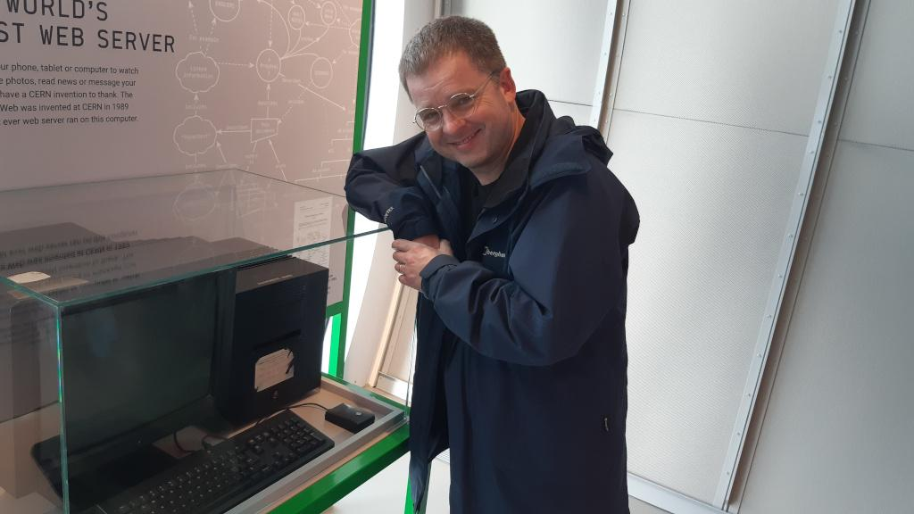

I really don't want to write this blog post. So, it's offered in a spirit of
polite resignation.
A couple of days ago a friend and current board member of the
Python Software Foundation (PSF) reached
out asking, "Hey, we want to feature some CSA awardee's pictures in the PSF
blog post, do you want to give me a picture of you to use?" CSA is the PSF's
Community Service Award,
of which I was a recipient millions of years ago.
The short answer is, respectfully, "no, and please don't feature me".
The longer answer, which I'm sharing here so I don't have to keep repeating
myself, is more complicated.
It is a privilege that many remarkable folks in the Python community are my
friends. They are a diverse and international bunch who bring to life a
multitude of experiences, cultures and outlooks. To say they are very different
(despite sharing common cause in Python) is an understatement. Their unique and
multifarious gifts are something special to cherish and, just like a
symphony orchestra, when taken together their whole is vastly greater than the
sum of their parts. My world is enlarged by my fulfilling encounters with these
folks and I am thankful that I am able to learn, grow and flourish through our
interactions together.
Yet, there is a dark side to the Python community.
As I have extensively explored elsewhere in this blog
(here, here and
here), I no longer participate in the UK
Python community. I do not feel safe or welcome, nor do I trust the UKPA's
presence in that community. Through conversations with many of my Python
friends, I can say with certainty that my experience in the Python community
is NOT unique.
A case in point...
In a triggering turn of events, over the past two months I have watched with
increasing horror as important parts of the Python community have unravelled
into what can only be described as a cesspit of hurt and dysfunction.
Factionalism is rife, heels have been dug in and the positions of others have
been misrepresented.
It saddens me deeply that the PSF are at the centre of (although not the only
participants in) this unfortunate and destructive turn of events.
Stepping up and volunteering in an open source community is hard
work. Often things go wrong and complicated situations arise so nuance, self
reflection and compassion are key to affirmative growth and collaboration.
Herein is the nub of our sorry situation.
The PSF appears
unable to acknowledge
both the plurality of dispositions in our community nor that the Python
community is often a deeply unpleasant place. I believe the first step to
effectively engage with such unpleasantness is to acknowledge that it exists
and then, in a deeply uncomfortable and tricky process, explore it together via
mutual respect, compassion and honesty. Eventually, perhaps, reconciliation
and trust can flourish. Rather than corporate platitudes, shallow musings and
tragic exclusions, I hope the PSF take a long hard look at themselves and
honestly re-evaluate their presence and the behaviour they embody within the
community. The alternative is the disintegration of Python into something akin
to the
"People's front of Judea" segment
of Monty Python's "Life of Brian".
I sincerely hope the PSF find ways to listen, show leadership and engage with
compassion. Only then can hurt be healed, collaboration re-established and
trust regained. I'm not so much trying to call out the PSF as to call them in ~
into a more enlarged and empathetic approach than has hitherto been apparent to
me.
If you doubt my words are true, read those problematic discussions and ask
yourself... does the Python community feel healthy and happy at this moment in
time?
This is difficult work. We can only do this work TOGETHER. We can only
work together if problems are acknowledged, differences respected and mutual
trust encouraged. Currently, alas, I see no such hoped-for engagement from the
PSF. For no amount of PR gobble-de-gook, high handed pronouncements or a witch
hunt will fix such a deeply broken situation.
Until things change to a more compassionate and less performative approach, I'd
rather not be involved (thank you very much).
Peace.
Addendum (2024-09-18)
I want to publicly acknowledge and thank my PSF board member friend. They
graciously responded, "I am sorry you feel so bad about the situation. I
understand your decision, no hard feelings." This embodies the best of the
Python community. Bravo.
I want to add that I don't feel bad.
I feel disappointed.
The unravelling in the Python community has caused me to pause and wonder how
the actions taken by the PSF represent the sort of community we want to be. My
hope has always been for a tolerant appreciation of the subtleties of context,
a focus on open minded mutual care and understanding, along with a large dollop
of big hearted compassion and a sense of fun.
Alas, recent PSF activity is hard to reconcile with such a hope.
There appears to be confusion between things that should be celebrated (like
passion, humour, honesty, differences of culture and diversity of experience)
and things that are genuinely problematic (like deliberate bad-faith activity
or intentionally diminishing, dehumanizing, harming or harassing others).
The PSF tragically excluded folks acting in good faith. The PSF doubled down on
the "welcoming community" narrative at the exclusion of acknowledging things
are awry (and that the PSF has some part in this unfortunate situation).
Frustratingly to my eyes, the PSF's corporate "PR" diminishes the carefully
cultivated good standing and authenticity of the organisation. Remember when
Python was fun? Me neither... :-/
Open source is hard work. Everyone involved wants Python to flourish. I have no
doubt we all mean well. My disappointment is that the PSF promote ideals in a
way that appears to embody their polar opposite. Furthermore, their actions
appear to suggest the PSF no longer stands for the community... the PSF stands
for the PSF.
I hope my words stimulate a more reflective, humble and heartfelt outlook;
otherwise I fear we'll continue to decline into yet more fractious schisms.
Reconciliation is something we can only do together, and it won't be easy.
PyCon US 2024 has been and gone. It was mostly
lovely, and huge thanks to the team of volunteers who made it happen.
I was privileged to help plan the
web assembly summit
with my buddies Brett and Fabio. We paid close attention to cultivating a space
where folks could meet, learn and build the connections needed to grow our
nascent WASM community. I enjoyed paying attention
to the three excellent talks about PyScript given by
my friends, Jeff Glass,
Valerio Maggio and
Łukasz Langa. Their
conference contributions (and many ad hoc conversations in the corridor)
proved PyScript retains its buzz in the community. It was wonderful to pay
close attention to the many dear friends I only ever see at PyCon US... a
diverse circle of coders, kindred spirits and collaborators from all over the
world.
Clearly, paying attention was my primary pastime at PyCon.
To what we pay attention is important. How we pay attention is equally
consequential but often unconscious. Considering why we pay attention is
perhaps most significant ~ an engaging, poignant and sadly neglected
opportunity for self-examination.
Paying attention to paying attention is worthy of paying attention.
Pay attention! What does the conference brand design express about PyCon?
I must admit to mixed feelings when I consider the way some of my programming
peers pay attention to the world. Put another way, there have always been
aspects of the Python community that I have found deeply uncomfortable. Without
wishing to tarnish the good stuff at PyCon, here's what makes me pause for
thought...
Despite welcome community representation, the exhibitor's hall at PyCon is
mostly full of companies vying for attention with banal booths hosting
transactional "brand engagement" via bland talking points. Tired marketing
slogans bore attendees with infantile newspeak ordering us to "grow", "unleash"
or "innovate" with over-inflated (yet soon forgotten) products. The exhibitors'
scanning of conference badges is a QR-based game of cat and mouse. The prize?
Yet more email spam. Unsurprisingly, attendees have to be lured into this space
with the promise of lunch.
Happily, most conversations at PyCon are friendly and nourishing, but some turn
into a sort of performative alpha-geek / silverback coding-gorilla display of
programming buzzword bingo for
the tech bro
/ brogrammer crowd. A less
performative but equally problematic sort of conversation involves a trite
and blinkered obsession with quantitative measurement of often-suspect or dull
metrics to prove a qualitative point (and thus attention is misdirected).
Alas, the predominant mythology at PyCon US is (unsurprisingly) US centric and
dominated by
Silicon Valley,
Big Tech and
Hacker News startup culture
with a
surveillance capitalist
bent. In this culture euphemisms and
doublespeak, such as "get
to know your users" or "deliver value faster", misdirect attention from often
sinister and manipulative uses of technology: the intention behind the examples
I've just given being a more efficient pollution of our world with insidious
adverts. (Remember folks,
always use an ad blocker with your browser).
My discomfort comes from the unquestioning and uncritical attention towards,
and tacit normalisation of such exploitative and banal aspects of coding
culture. The emperor has no clothes: this is not "progress" and "growth" into a
"brave new world", but a one dimensional, thoughtlessly performative and (small
C) conservative and conformist outlook that places technology over humanity for
the dumb sake of profit. The
vapid products this cultural cesspit spews into the world suck all the
creativity, depth and joy from life.
Woe betide criticism of such a culture, or you'll be labelled a
neo-Luddite.
To be clear, I'm not against technology (no shit Sherlock, it's actually
fucking useful!). Rather, I'm against shallow, stupid and stunted ways of
paying attention to tech and coding. I believe we can (and must!) do better
than this sorry state of affairs. As programmers we can shine a light on such
things in the hope we explore and encourage alternative ways to pay attention,
express ourselves, empower folks and carefully enlarge the world through
creative, evocative and joyful technology.
All this probably explains why, for me, the most interesting and stimulating
aspects of PyCon were the opportunities to be away from PyCon. They jarringly
contrasted with the conference in the way they emphasised how to pay attention
to the world.
Prior to my visit, I had only limited encounters with the work of Warhol: the
"15 minutes of fame" quote, garish quartets of Marilyn Monroe prints,
Campbell's soup cans, and 80s-era photos of a vacant looking eccentric with
blonde hair and glasses. Yet the Warhol museum captured and stimulated my
attention. I especially enjoyed sharing this time with Naomi, who is always
such a playful presence with a large dollop of thoughtfulness thrown in for
good measure (more on this soon).
My impression of Warhol is of a man who found himself in an adverse world, then
dared to make a space for himself by subverting the familiar. His subversions
are funny, ironic, goading, engaging and assertive in a way that also feels (to
me) disconnected and slightly bored with our manufactured world. Thus, he
directs our freshly subverted attention to the familiar and we experience a
dislocated "huh?!" moment of reflection or revelation.
For instance, he called his studio
The Factory - presumably because
it was an assembly line for his art as well as a conveyor belt of visiting
celebrities. He published a book,
The Philosophy of Andy Warhol (from A to B and back again),
ghostwritten by someone else using recordings of Warhol as source material.
Explicit homoerotic portraits drawn with a black ballpoint pen announce his
overt homosexuality... drawn at a time of discrimination and prejudice against
the LGBT+ community. The film
Taylor Mead's Ass
is a glorious 76 minutes of actor
Taylor Mead's
naked backside capriciously capering around as a celluloid riposte to a
film critic who complained he was bored of films containing Mead's ass (it's a
silent film, and I wondered out loud to Naomi about the possibility of adding
comedy sound effects). The playfully manufactured and entirely unnatural
Silver Clouds
(shown above) are plastic silver "pillows" filled with a careful mix of helium
and air - just like kids' party balloons. Naomi and I spent an entertaining
time bopping and booping them about the room and I, as a tuba player, couldn't
resist vigorously blowing underneath one of the pillows in a respiratory
busting and ultimately futile game of
keepie-uppie. We were told by one
of the staff that the pillows regularly escape,
especially in the presence of children (young or old). Of course, the museum
also contained versions of the iconic Warhol pieces, yet did so with sympathy
to the unfolding story as one explored the space. There was no "oh look, gotta
catch a photo of the Mona Lisa" or "lemme take a selfie with these Van Gough
Sunflowers" moment during our tour... although I suspect Warhol would have
sabotaged such contemporary theatrics, given half a chance.
Naomi and I discussed how we couldn't really imagine such provocative
playfulness at PyCon, nor any pointed subversions during the conference talks.
I was left in a thoughtful (i.e. grumpy) mood about our contemporary culture
contaminated by social media. Thanks to such exploitative technology, folks
don't have 15 minutes of fame, but an eternity of prompted performative
obscurity. If everyone is doing "famous", then nobody is famous and we're all
just sacrificing ourselves to assessment by algorithms.
Of course, Warhol has an angle on this.
One of the floors of the museum contains installations playing some of the many
screen tests
he shot in the mid-60's. I found myself asking "who's looking at who?" and then
I wondered about how individuals choose (or perhaps have no choice over) how to
present themselves. The personal branding, self obsessed "influencers", and
manipulative gaze of social media in contemporary culture came to mind. Are you
famous if you're on film or filmed if you're already famous? Warhol was playing
with the notion of "famous" long before coders thoughtlessly brought YouTube,
Twitter and Facebook into the world as an exercise in exploiting our collective
narcissism for the sake of shareholder value.
"I will if you will", I said to Naomi. She gamely took a seat and kicked off
the immortalization of four minutes of awkward "so now what do I do?"
exasperated looks into a fake film camera making faux whirring noises. As I
sat during my session, I counted in my head, listened to
Colonel Bogey with my inner
ear, and tried very hard to ignore the various passers-by (to varying degrees
of success). Ultimately, for four minutes I'd become another exhibit... a
delightful subversion of what it is to visit a museum. Bravo to the curators
for such an ironic trick. At the end, you're emailed a link to your
screen test... and I've embedded mine below. I bagsy this as a four minute
quota from my promised fifteen minutes of fame. I hope to make better use
of my remaining eleven minutes.
Here's the thing, I appear to be paying attention to you, as you pay
attention to me, but I'm not actually there! Perhaps Warhol would have
appreciated adding such a non-attentive video to an article about attention.
Another joyful contrast to PyCon was dinner with my buddy
Andrew Smith and
his partner Jan, along with Naomi, Guido and
Eric... all of whom (like me)
encountered Andrew as he was writing his latest book,
The Devil in the Stack.
The distinct lack of technical conversation was a breath of fresh air, and
Andrew and Jan were energetic and entertaining hosts.
In the week before PyCon and during PyCon itself I found myself reacting to the
conference with poetry (or, more accurately, doggerel). Feeling motivated by
the playfulness of the Warhol museum visit, and because an opportunity arose
during the meal, I was able to share some of these verses of varying
quality with such literary friends(!). I'm re-sharing them here so I can feel
they've somehow "escaped" into the world, and can take on a life of their
own... or simply pass into bewildered obscurity.
The first is a limerick about Guido. I've changed it from the version I read
out at the meal, since he explained that some Dutch I'd originally included
didn't quite make sense in the way I had hoped.
I was prompted by chatting with Guido at 2023's PyCon. I noticed he had covered
his name on his conference badge with a post-it note saying, "no selfies".
Guido is, of course, the inventor of Python.
No Selfies
Said Guido, a programmer Dutch,
“I really hate selfies. As such:
I might be your hero,
But to me it means zero.
Please leave me in peace, thanks so much”.
“But Guido you're really a saint,
When meeting you I feel quite faint.
I want to shake hands,
Rise above all the fans,
Be your best buddy without restraint”.
“Oh God! Please just make it stop!
These programmers really must drop,
The deluge of thanks,
Autographs and cranks,
'Else PyCon, for me, is a flop”.
I'm proud to say, everyone at dinner was politely bemused!
I didn't share this next poem at the dinner because it was still relatively
incomplete at the time.
Ode to a Data Scientist
This has 97 words, 12 lines and 3 verses,
Rhymes A-A-B-B in a scheme that traverses,
Through four lines per stanza, in compound time,
A measurable quantity expressed as a rhyme.
No doubt such patterns and figures reveal,
Aspects of things that stats un-conceal.
Yet these numeric collisions of aggregate stuff,
Are a diminished perspective that is not enough.
The observable facts such as these do not show,
Or reveal the subjective world that we know.
For beyond such detachment and detail we wend,
Through a universe to live in, embrace and transcend.
This is my plea for a more nuanced, expressive and felt view of the world.
Truth be told, I don't see myself as a programmer. In my mind's eye I'm a
musician who just happens to use code as their medium (reflect on
Charles Ives's famous question,
"my god, what has sound got to do with music?"). If you were to cut me open,
only my little toe would contain code, my uncoordinated left foot would perhaps
encompass my interest in philosophy, and my sprained ankle would be my
educational efforts. The rest would just be music.
I was in a puckish and annoyed mood when I wrote this final poem. I simply
wanted to poke fun at the barren world view of the tech bros.
The Plural Noun for Tech Bros
A herd of tech bros circle together,
bleating about the Pythonic weather.
Don't be the sheep cut off from the mass,
unable to pass,
as someone,
with something,
interesting
to
say...
Their mental masturbation ejaculates
ever-fruitless discourse:
Repackaged reportage from Hacker News,
Performative patronising technical reviews,
Name dropping semi-famous nerds,
An infinite garbage of computer-y words.
Detached and empty with no spark of life.
The real world ignored, to cut off its strife.
So clever they lack the intelligence to know,
We are vital and luminous souls who grow
Through connections and feelings and deep self revealings,
But their work fills the world with VC funded dealings.
Squeezing huge profits through inhumane code,
We're exploitable data points, with privacy to erode.
What do we call such a desperate crew?
A wank of tech bros, that'll do.
It felt good... nope... it felt great to read out such silliness to friends
~ paying attention to coding culture with my creative, playful and expressive
side while gleefully ignoring the performative moralising and tone policing
that often goes on in the (Victorian)
Python community. We desperately need writers, poets, artists, dancers,
sculptors, actors, architects, comedians and musicians in the world of coding,
if only to save us from the currently brain dead coding culture. Programming
is an art, so please come join in... we're not all thoughtlessly tone deaf
like Elon, charismatically challenged like Zuck or so easily forgettable like
those dudes, whose names escape me, that run Google.
The photographs I took while on the excellent guided tour should, I hope, speak
for themselves. Take your time browsing through them.
Thanks to the visit I'm reading a recent biography of Frank Lloyd Wright called
Plagued by Fire
by Paul Hendrickson. It's a quirky book about a deeply complicated man.
Frank Lloyd Wright was a surly, manipulative narcissist and his life was full
of dramatic twists and turns. He founded an influential
studio and school for architects,
was a major figure in the Prairie School
of architectural design, and (perhaps thanks to the way Falling Water captured
the public's imagination) had more than 400 commissions in the final three
decades of his life (he passed away at the age of 91).
Most paradoxically, given his arrogant, self-mythologising and dissonant
nature, he promoted an architectural philosophy called
organic architecture
that aimed to bring about harmony between human habitation and the natural
world. In his view, buildings should be at home in nature and grow "out of the
ground and into the light". Not only did organic architecture work with the
natural conditions of a site, but the process of design, construction, living
and maintaining was integral to the outlook, like stages in the life of a
living organism. Because of this dynamic outlook, Lloyd Wright believed that
"no organic building can ever be 'finished'" since it should respond to its
changing environment and needs of its occupants. He also emphasised the
importance of integrity - that a building should be "integral to site, integral
to environment and integral to the life of the inhabitants". Falling Water is
often cited as a classic example of this philosophy, articulated in his book
The Natural House.
My response to Falling Water was reflective: attentively being in the place
to assimilate and appreciate its presence, along with my own presence within
it. In the same way a live performance of music may create a time and place for
encountering certain feelings or attitudes, so this building had a
psychological impact on those who explored its rooms, transitions and placement
within nature.
As Joe, our mature yet sprightly guide, showed us around the property he
brought our attention to hidden details while telling the story of the life of
the house. He skilfully illustrated aspects of Lloyd Wright's philosophy. For
example, the notion of "destruction of the box" was mentioned several times:
the rooms were varying in shape, often open and flowed into each other. Joe
brought our attention to details relating to the fixtures, furniture, windows,
bathrooms, materials, lighting, the aural experience of the waterfall and
accessibility to the stream, sun and trees in the surrounding area. Everything
about this building was done consciously, with care and through a process of
attending to the way the parts "organically" cohered and emerged into a whole.
While chatting with the ever-thoughtful Martin, we both commented on how this
attitude to building structures was very different to the usual way we build
software. We agreed (to paraphrase our conversation) that coders,
"thoughtlessly bung features together and then
A/B test the hell out of it". To
me this attitude feels closer to
Le Corbusier's famous claim that,
"a house is a machine for living in". It's a contrasting outlook to Frank Lloyd
Wright, and pays attention to design for functionality, optimization and
efficiency. But I want to ask: who decides function, what needs optimising and
how optimisation takes place? I suspect most would point to the god-like
architect. Sadly, like the disempowerment of using products created in the
current coding culture, folks who inhabit such buildings don't get much of a
say, nor are they encouraged to change such "efficient" buildings to their
actual needs.
I quite like the sound of "organic software", although I'm unsure what it might
be. Right now it's a rough sketch in my head of an attitude or way of paying
attention to the creative act of writing code. Perhaps that's the nub of it:
organic software empowers folks to pay attention, change and control the code
in their digital life so it reflects their unique and precious presence in the
world.
I can't help but wonder that a whole is never the same as the sum of its parts,
be that a building, a piece of music or even software. Rather, there are simply
different ways to pay attention to the world, and by focusing on the whole or
parts thereof, each illuminates the other depending on the sort of attention we
pay to it. The world is independent of us, yet how we pay attention to the
world reveals the world to us in a certain sort of way. Such creative
attention, as I have mentioned before, is a potent and
fluid process of encountering, understanding and expressing. We discern the
universe and also change the universe through our discerning and reacting. How
we choose to pay attention (for it is certainly a choice), is a significant
creative and moral act: it both makes and enlarges the world.
An inevitable musical metaphor illustrates what I mean. As a performer I could
just play in a mechanical-yet-very-accurate manner, only paying attention to
the formal and technical aspects of a piece. Yet this is clearly a diminished
performance because of the absence of attention to expression, feeling or
"ensemble" (the connection with other performers and the audience), those
aspects of performance that fall under the realm of musicianship. The former
attention to musical technique is only worthwhile if the latter attention to
musicianship is present. To be a good musician you need to bring to bear many
different ways of paying attention, each of which contributes to a new unique
entity containing and combining all these integrated aspects.
We pay attention in this creative manner because it gives us an enlarged,
affirmative and stimulating way to participate in and transform the universe.
Put bluntly, it brings meaning to life.
As I said at the beginning...
To what we pay attention is important. How we pay attention is equally
consequential but often unconscious. Considering why we pay attention is
perhaps most significant ~ an engaging, poignant and sadly neglected
opportunity for self-examination.
I sincerely hope we all find a way to pay attention in a more compassionate,
creative and magnified manner.
Allegory (noun) : the expression, by means of symbolic fictional
figures and actions, of truths or generalizations about human existence.
Everyone knows the Python programming language was invented by
Charles Darwin and first
revealed to the world in his 1859 magnum opus, On the Origin
of Programming by Means of Natural Indentation, or the Preservation of Favoured
Algorithms in the Struggle for Resources.
As has been copiously documented elsewhere, while Darwin suffered ridicule and
hostility from the Victorian establishment, a community of supporters emerged
to help Python reform its reputation as a programming language, achieve
widespread acceptance, and eventually become a core part of our modern
computing stack.
A group shot of some of the early Victorian Python community.
(Source)
This group of unnamed community organisers were responsible for some of the
first Python programming conventions and exhibitions. They eventually
instigated the Royal Society of Python (RSP) whose first patron was the
Prince of Wales. Even today, the
post-nominals FRSP (fellow of the Royal Society of Python) are widely
established as a much sought after recognition of professional success.
Of course, the earliest Python programmers were exclusively gentleman amateurs
~ men with the education and financial means to pursue an interest in
computing, for the love of it rather than for financial gain. They often met
to informally discuss their work in the coffee houses and gentlemen's
clubs of London. Such activity soon led to the formation of The Pythian Club in
1863 (the forerunner of the Royal Society of Python) and the publication of
technical papers, written by club members and published in its journal, The
Pythian Exposition Pamphlet (PEP).
Much innovative and creative energy was shared in those early years. While some
of this activity addressed uniquely Victorian technology and cultural norms,
we still use a remarkable amount of code from this era. Furthermore, a
recognisably Pythonic approach and aesthetic, familiar to programmers of today,
emerged at this time.
Because of cultural norms rather than by design, the early Pythian Club was an
exclusively male space. However, as Python became more widely known, women
ventured into this traditionally male world. The Pythians, as they came to be
called, hoped to promote the widespread popularity and adoption of Python, so
eventually welcomed women. By 1879 up to 5% of their members were female.
Unfortunately, women often found themselves on the receiving end of the tacit
mysogyny, sexism and male chauvinism of the time. Similarly, ingrained
institutional racism and cultural prejudices also meant those from a
non-European background were often excluded, patronised or subjected to onerous
membership requirements.
In response, and because measuring things always reveals the right answer,
concerned Pythians collected data and published tables and charts to show how
their ranks were growing according to the sex, age, social background or
nationality of the participants.
The Pythians produced statistics about female coders (this example
is from the 1890s). (Source)
Complementary to such data led practices, and born of a desire to improve the
moral fibre, deportment and behaviour of Pythians, the first of innumerable
versions of a code of conduct was published.
One of many versions of the Victorian Python community's code of conduct.
Finally, a group of teachers, school inspectors and orphanage directors
worked
together with the Pythians to tackle the problems of dangerous child labour
practices, youth delinquency and sub-normal computing literacy in the general
population. An act of parliament, championed by
Lord Russell
in 1876, forced all children to learn about computation with the aid of an
abacus, slide rule and clockwork calculating machine called a
micro:contraption:for:computing:splendid:results.
Patronage of the Prince of Wales and a royal charter soon followed and the
Pythian Club became the Royal Society of Python, whose offices one can still
find on John Adam street, adjacent to
the Adelphi,
just off the Strand in London.
Enthused with successes, the Royal Society of Python organised schools for the
fortification of logical, algorithmic, inquiry and learning (the origin of the
phrase, "to flail around"), and organised a curriculum of rote learning and
regular examinations to ensure young people were equipped for, and knew their
place in the growth of the British Empire.
Instructions from an early Victorian Python education summit.
Such practices, codes of conduct and educational efforts were widely adopted.
Yet there were dark clouds on the horizon and such developments caused
consternation among two groups:
Artistic free spirits, those of a melancholic disposition, anarchists, and
trade unionists, who inevitably railed against the formal rules, regulations
and processes imposed from on high.
Traditionalists, progressives and everyone in between, who simply disagreed
with whatever was the current code of conduct (until it was replaced with
their own version).
Into this mix came further considerations: a desire that financial endowments
from the Royal Society of Python be made to the deserving poor with the right
sort of upstanding constitution, rather than to the afore mentioned artistic
types, the morally corrupt, and bothersome foreigners barging in on the
society's coding crusade for the spread of civilized indentation.
Some senior members of the Royal Society of Python, the very people who
organised such selective grant giving efforts, preached the virtues of
kindness and charity to assemblies of the Python community. Thus, they ensured
their political manoeuvers appeared ostensibly benign.
The situation became ugly as such members vied for power and resources within
the Royal Society of Python. Manipulative machinations, plots, gossip, self
promotion and factionalism ran rife. The Royal Society of Python was no longer
a friendly society of shared fellowship in the craft of coding. Those suspected
of straying from the conventional straight and narrow path were swiftly
condemned in the
letters page of the London Times
and subtly ostracised.
Senior members of the Royal Society of Python.
Furthermore, industrialists from the north of England, seeing how lucrative
Python based produce could be, sponsored or employed senior members of the
society to advance their interests and ensure profits remained secure. They
even exerted shadowy influence within the Royal Society of Python so
competitors were excluded or disadvantaged (most notoriously, a director
of a Python-using pie making company from Cambridgeshire undermined the award
of the society's annual medal to a competitor and ensured yet another was
excluded from fully participating in society activities).
The fun, adventure and imaginative spark of Python's early days disappeared and
was replaced by the puritanical promotion of stifling, trite and standardised
frameworks and processes for many aspects of Python coding (from
type hinting and
source control
to the
writing of documentation). With the encouragement of their
paymaster industrialists, some members of the society used their influence
and control to deliberately spread (insipid yet so-called) exemplary standards
of upstanding engineering practice that benefited the business interests of
their sponsor or employer. Alas, Python was widely used to create mass market,
derivative, lifeless and banal software in a race to the bottom of the coding
barrel.
(Urban myth tells us that a bug-ridden Python script driving a lace making
loom got into an infinite loop, and thus the
Nottingham lace industry
was born with a (literal) stack overflow of frilly collars, doilies, curtains,
knickers and drapes.)
Such sharp practices, political posturing and vapid design inevitably caused a
backlash.
Famously Oscar Wilde quipped,
"Python's not the serpent that tempted Eve", in a text penned while
incarcerated at Reading Gaol.
William Morris
lamented the poor quality and blandness of Pythonic creations in
his famous lecture of 1884, "How We Might Code" (further explored in his later
novel, "Code from Nowhere"). A certain
Mohandas Ghandi,
an Indian student studying Python at
University College London
in the late 1880s, went on to found the
swadeshi movement: a
reaction to the reliance on products produced by industrialised coding, and
whose aim was self-sufficient hand-made khodi (code). Meanwhile huge offence
was caused by
Emmeline Pankhurst who
dared to suggest women were as equally skilled as men at writing Python code.
Outside Britain and her dominions, the use of generative AI written in Python
was pioneered by Austro-Germanic composers such as
Anton Bruckner
("how else was he able to create so many hour-long symphonies that all sound
the same, with such regularity and in such a short space of time?" asked
George Bernard Shaw).
Inevitably, at the dawn of the 20th century, disgruntled Python coders broke
away from the troubled Royal Society of Python and formed small coding
cooperatives, guilds and workshops under the auspices of the emerging Code and
Crafts movement founded by Morris.
The influence of these reformers is still felt today: our more enlightened and
expressive approach to writing software, with its focus on human beings over
computers, authentic expression in the digital realm over simulated emulation
of the real world, and empowering creativity through code over data driven
automation, is thanks largely to the radical, risky and revolutionary (for the
time) work of such rebels.
Python therefore became both part of the British establishment and a haven
for unbound creative expression.
This dichotomy is best illustrated by Queen Victoria's reaction to learning of
the release of Python 3 support for the
SDL library
(she was able to return to the development of her
Bram Stoker inspired vampire
slaying game, an entry for PyWeek (1898) written with
PyGame).
Queen Victoria, on hearing of SDL support in Python 3, "we are
mildly amused".
(Source)
:-)
As they say in the movies, this blog post was "inspired" by
real events.
However, any resemblance to persons living or dead is coincidental, and any
implication that members of the Python community have a
sense of humour,
creative spark or moral conscience about the influence of technology on society
should not be inferred.
In those first months in London, as I began to fathom my situation, I realised
two things: I wouldn't become a professional musician and making sense of the
universe is a deeply challenging, subtle yet rewarding experience.
Imperceptibly, an awareness kindled within me: music, like all art, is a potent
and fluid process of encountering, understanding and expressing. It's how we
discern our dynamic and diverse universe yet, at the same time, change and
enlarge it through our creative contributions and collaborations. It is, I
believe, the most important and rewarding activity we can do, both singularly
as individuals and collectively shared with others.
Upon graduating, I needed a broader context in which to make
sense of things, so I embarked on a philosophy degree. It was an exciting
time... I had just met Mary and I was
acquiring a sense of the historic philosophical terrain while working out where
I found myself on the philosophical map.
A turning point was my first encounter with ancient Greek philosopher
Heraclitus, who has remained a
constant philosophical companion throughout my life. This blog post briefly
explores why Heraclitus resonates so much with me.
A pensive Heraclitus, as depicted by Raphael in
The School of Athens.
(The figure is actually a portrait of
Michelangelo, who
shared a misanthropic reputation with Heraclitus. To the right, in blue, is
Socrates.)
Not much is known about Heraclitus, but what is probably true about him can be
said in a paragraph of four sentences.
Heraclitus, son of Bloson (or Heracon), was born and lived in
Ephesus - a Greek city on the
west coast of modern day Turkey. He was a member of an aristocratic family and
gave up his hereditary right of "kingship" to his brother. His
acme (ancient Greek for "prime" - usually regarded as around the age of 40)
was considered by
Apollodorus to have
been the 69th Olympiad (504–501 BC),
and he probably died approximately thirty years later. He wrote a single
philosophical work, well known in antiquity but now lost, that may have been
titled "On Nature", a copy of which he placed as a
votive deposit in the
temple of Artemis at
Ephesus.
That's it!
However, many spurious claims have been made about Heraclitus; the main source
being Diogenes Laertius's
book
Lives and Opinions of Eminent Philosophers,
written in the 3rd century CE, around 700 years after Heraclitus flourished.
Diogenes is a problematic figure because he's a mixture of unreliable and
highly speculative gossip columnist, uncritical historical biographer and
scatter-gun reporter of "facts" (often lacking context, evidence or relevance).
His account of Heraclitus is a corker of a hatchet job, worthy of any British
red top tabloid.
According to Diogenes, Heraclitus was an
autodidact
who claimed to know
everything, regarded everyone else as a moron (with a few notable exceptions),
and preferred to play games with children than engage with his fellow citizens.
Because of his unpopularity and misanthropic nature he was forced to leave
Ephesus and live on a vegetarian diet, alone in the mountains. Eventually he
fell victim to dropsy and returned to
Ephesus where he sought treatment from the town's doctors by posing them
riddles. Unable to make sense of the riddles, the doctors failed to cure him.
Heraclitus took matters into his own hands and decided to cover himself in
bovine faeces in the hope the warmth of the fresh dung would dry out his
dropsy. This failed and he died at the age of seventy, after which his
"bullshit" encrusted body was devoured by a pack of dogs.
Yet Diogenes also reports that
Socrates, no less, was a puckish fan:
They say that Euripides, giving
him [Socrates] a work of Heraclitus to read, asked him what he thought of it,
and he replied: "The part I understand is excellent, and so too is, I dare
say, the part I do not understand; but it needs a Delian diver to get to the
bottom of it".
(A Delian diver fishes for pearls.)
This is a good illustration of Heraclitus's reputation in antiquity as obscure,
cryptic and difficult to fathom.
Aristotle complained about
Heraclitus's ambiguous punctuation and style in his
Rhetoric
(a treatise in the technique of argument), and Aristotle's student
Theophrastus reported
Heraclitus's book was disjointed and unfinished, attributing this to
Heraclitus's melancholic nature (resulting in Heraclitus's epithet "the weeping
philosopher").
Heraclitus, the weeping philosopher, as painted by
Johannes Moreelse
in around 1630.
But Aristotle missed a subtle aspect of Heraclitus's technique of argument (in
his own work on the technique of argument!). Heraclitus's enigmatic style is
not a result of grammatical failings nor foggy thinking. He knew what he
wanted to say, and how he wanted to say it. His prose is often a subtle
embodiment of his philosophy. In fact, Heraclitus hints at this when he says,
The Lord whose oracle is at Delphi
neither declares nor conceals, but shows by sign.
(B93)
Similarly, Heraclitus's writing neither declares nor conceals, but shows by
sign. His enigmatic writing style forces his readers to actively engage in the
analysis, comprehension and
literary appreciation of his words, as a vehicle to demonstrate his wider
philosophical point. To me this is more akin to poetry, perhaps because
Heraclitus was one of the first Greek prose writers - until that time, most
Greek writing had been poetry - and the basic conventions of prose writing had
not yet been established.
This first direct quote from Heraclitus about the Delphic oracle provides an
opportunity to explain the nature and organisation of the fragments that have
survived.
All that remains of Heraclitus's work are a small group of around 130
quotations, paraphrases and aphorisms found in the works of later authors
(such as Aristotle's quote from Heraclitus in his work on rhetoric). We have no
idea how most of these fragments relate to each other, nor where they appear in
the original book.
This is a double-edged sword.
On the one hand, it is impossible to tell how Heraclitus organised his book's
philosophical narrative, how it was thematically arranged or discern the
structure of its exposition or the subsequent development of ideas. While I
believe there is strong evidence Heraclitus had a cogent and coherent structure
to the book, what that was has been lost. Therefore, arranging the fragments
is a deeply troublesome undertaking. To organise and interpret them according
to the themes found therein may help to capture the coherence of thought
behind the work, but risks speculation, educated guesswork and interpretation
reflecting the background, interests and prejudices of the curator. The
alternative, and most common practice, is to recognise the shortcomings of such
an approach and present them in an alternative fashion. This was how
Hermann Diels
compiled all the extant works of ancient Greek philosophers in a book called
Die Fragmente der Vorsokratiker (The Fragments of the Pre-Socratics). In this
Diels–Kranz [DK] numbering
system the fragments are mostly arranged according to the alphabetical order of
the names of the sources from which the fragments were taken. For instance
fragments found in the works of Aristotle come before those quoted in Diogenes.
This has become the standard, and the identifier B93 is the DK number for the
fragment quoted above.
Fragment B103a written on an ancient papyrus (Papyrus Oxyrhynchus
3710, col. ii 43-47).
On the other hand, the fractured provenance of the fragments is an opportunity
to honour Heraclitus's desire that we actively engage with his words and ideas.
Put simply, we need to pay close attention and work out for ourselves our own
interpretation and arrangement of the themes and ideas. For me, it matters not
that our view of the remaining fragments will be different to what Heraclitus
originally intended, yet it is of the utmost importance that we engage with and
are stimulated by the thoughts found therein.
Heraclitus says as much:
Upon those who step into the same stream ever different waters flow.
(B12)
The person who loves wisdom must be a good inquirer into a great many
things.
(B35)
In reading Heraclitus, I like to think we're undertaking a sort of
philosophical
cut-up technique (découpé).
Or perhaps we are using a more contemporary Internet-age share/remix/reuse
process, as championed by the Creative Commons.
My point is that [re]assembling Heraclitus's work is a fundamental aspect of
encountering and comprehending it. It's a very unconventional yet valuable
philosophical situation, and that's something to welcome!
Fragment B12, quoted above, is usually paraphrased into English as "one cannot
step into the same river twice", and is one of Heraclitus's best known
aphorisms. It is also a good example of the various linguistic quirks of
Heraclitus that make translation of the fragments a challenge.
There are broadly three aspects of translation that inform our understanding
of the fragments.
It is important to be aware of the philological aspects of Heraclitus's
writing: his place in the history and development of ancient Greek, that he
wrote in the Ionian dialect
and that his prose style was perhaps deliberately aphoristic and even oracular
in tone at a point in time when such a prose style of writing was not yet
established nor refined to have widely understood conventions and
characteristics.
The semantic context of Heraclitus's writing is often fascinating and (as
Aristotle pointed out) sometimes frustrating. Heraclitus is deliberately
ambiguous yet careful in his choice of words, and a full understanding of a
fragment often depends upon recognising the sophisticated multi-layered
significance in the terminology Heraclitus employs (often as a way to embody
the concept[s] he is exploring or describing). Part of the fun in reading
Heraclitus is to uncover the colourful, intriguing and often revealing
interplay of such subtle linguistic layers.
Heraclitus's style of writing often contains puns, wordplay, neologisms,
assonance, alliteration, onomatopoeia and other compositional techniques
more commonly associated with poetry rather than prose. As has been mentioned,
Heraclitus was an early writer of ancient Greek prose so existing and well
established poetic techniques that would become absent in later forms of prose
still find their way into Heraclitus's writing. I find this aspect of
Heraclitus's style very engaging and appealing.
Returning to fragment B12, "one cannot step into the same river twice", while
mostly accurate in the broad sense of what the fragment is literally saying,
misses the more subtle aspects of the language employed. For instance, the
original ancient Greek is pronounced in such a way that the sentence
onomatopoeically babbles like a river, while the grammar makes it ambiguous if
the river or the person stepping into it have changed. This grammatical twist
demonstrates a subtle philosophical point: the fragment can be read in
different ways (one cannot step into the same sentence twice!), and thus the
meaning is changed as one reads the sentence one way or the other. It
(literally) illustrates the changing nature of re-encountering changed things
— precisely the concept the fragment is exploring. For me, this is but
one example of Heraclitus's engaging, playful and sophisticated literary style.
These points are beautifully explored in this short audio extract from an
episode on Heraclitus from the
magnificent BBC radio series,
In Our Time.
I hope you especially pay attention to the babbling pronunciation of the
fragment.
There are many English translations of Heraclitus. They range from the literal
side-by-side with the ancient Greek
(Loeb), or the
poetic
(Guy Davenport)
to the academic (Charles H.Khan)
and the literary (Dennis Sweet).
Each reveals a different aspect of Heraclitus's writing and reading numerous
translations (as I have done) is itself a stimulating exploration of how others
have [re]assembled, [re]interpreted and [re]presented Heraclitus's words and
philosophy. It feels to me like listening to different musicians performing
contrasting interpretations of a composer's work.
Remember the sentence that so annoyed Aristotle? Here's the original Greek and
how each of the afore mentioned translations render it - along with any
translator's notes relating to the sentence. It's the famous first
line of the first fragment which, we can be reasonably confident, opened
Heraclitus's book. It introduces the important concept of logos:
And of this account (logos) that is—always—humans are
uncomprehending, both before they hear it and once they have first heard it.
(Loeb)
The Logos is eternal
but men have not heard it
and men have heard it and not understood.
(Davenport)
Although this account holds forever, men ever fail to comprehend, both
before hearing it and once they have heard.
(Khan)
account:logos, saying, speech, discourse,
statement, report; account, explanation, reason, principle; esteem, reputation;
collection, enumeration, ratio, proportion; logos is translated
'account' here (twice) and also in III, XXVII, LX and LXII; it is rendered
'report' in XXXV, XXXVI and CI; 'amount' in XXXIX.
holds forever: text is ambiguous between 'this
account is forever, is eternal' and 'this account is true (but men ever fail
to comprehend)'.
Of this eternally existing[1]logos people lack
understanding, both before and after they hear the primary
thing[2].
(Sweet)
1 I follow Diels and Zeller (after Clement, Hippolytus, and Amelius)
in putting ἀεὶ with ἐόντος, contra Reinhardt, Snell, Gigon, and Kirk,
who connect it with ἀξύνετοι. This seems to be a more natural grammatical
construction and is more consistent with Heraclitus's doctrine of the eternity
of the logos. Cf fr. 30.
2 Since τὸ πρῶτον contains an article and is in the accusative
case, it is treated here as the object of ἀκοῦσαι and ἀκούσαντες. This
interpretation implies the fundamental nature of the logos rather
than simply indicating the first hearing of the idea (contra Kirk
[1962], p.33).
For what it's worth, in this blog post I use Dennis Sweet's translations into
English because he attempts to retain the flavour of the original Greek, while
rendering the fragments into coherent English that carefully acknowledge the
inherent playful poetic style and multiple layers of meaning. I'm also very
fond of Davenport's poetic rendering of the fragments, although these very much
reflect his personal aesthetic and interpretation, and may not appeal to
scholars or "purists" (like the Jacques Loussier Trio
performing Bach to Jazz
afficionados or fans of
historically informed performance).
Given such context and back story, I can finally begin to explain my personal
impressions of Heraclitus's philosophical themes. These are offered as a record
of my own encounter with Heraclitus's work, and certainly shouldn't be treated
as learned or scholarly. What do I know? I'm just a humble tuba player.
Heraclitus's philosophical project is to explore an apparent paradox: the
unity of the universe in the face of apparent diversity and change, and
core to this account is the eternal λόγος (logos).
Logos had many related meanings over time, and Heraclitus plays on this
richness of meaning. In the context of ancient Greek it originally meant
"selecting" or "picking out". The meaning shifted to "reckon", "measure" and
"proportion". Further refinement of its usage led to it meaning "thought",
"reason", as well as "formula", "law" and "plan". It also had connotations
around speaking, via a common etymological root with the ancient Greek verb
λέγω (lego, "to speak"). So logos can also mean a spoken word, a statement,
account, discourse or report. It is also the source for our modern English
word, "logic".
Heraclitus uses it to mean three broad concepts: the order (unity) underlying a
universe of diversity and change, the capacity of a person to discern and make
sense of such a situation (although very few people exercise this talent),
and our ability to communicate our thoughts about such things with others. Each
is a different facet of the eternal logos.
Put in a more personal (and musical) manner, the eternal logos consists of
three aspects: the singularly unified universe full of diversity and change
that we encounter, our cultivated and refined mental faculties through which
we understand the universe, and our skill at expressing our shared feelings
about, experiences and understanding of the universe with one another.
In Heraclitus's own words:
Listening not to me but rather to the logos it is wise to
agree[46] that all things are one.
(B50)
46 A play upon the words logos and homologein =
to agree.
Seizures[11] —wholes and non-wholes, being combined and
differentiated, in accord and dissonant: unity is from everything and from
everything is unity.
(B10)
11 sullapsies (συλλάψιες)—following Marcovich, Kirk, etc.,
contra Diels' συνάψιες. I have translated this word in its archaic
sense, which gives the notion of physical seizure or grasping. Snell, Kirk,
Marcovich, and Bollack-Wismann employ later senses ('Zusammensetzungen',
'things taken together', 'connections', and 'assemblages', respectively) in
their translations. All of these terms suggest a putting together and
unification of diverse things. Cf. the discussion of
harmonia.
Thinking is common to all.
(B113)
For since everything comes to be according to this logos, they are
like ignorant people when experiencing such words[3] and actions as
I expound—when I describe each according to its nature[4],
indicating how it is.
(B1 - second sentence.)
3 epeon (ἐπέων)—also suggests oracular
advice.
4 kata phusin (κατὰ φύσιν) = according to its
constitution.
The notions of commonality and universality are attributes that facilitate the
eternal logos. Sharing aspects both in common and universally, explains how
different things are able to correspond and coordinate with each other. Such
ordering relates to all things, and can be discerned, understood and
communicated by those rare persons who explore and engage with the eternal
logos.
Clearly Heraclitus was prickly when trying to acknowledge that not everyone
recognises, values or is capable of such philosophical explorations. He
explains that "the many are worthless and good people are few" (in fragment
B104), and is unflattering about his fellow citizens:
The Ephesians deserve, from the young men to the old, to be hanged, and to
leave the city to the beardless youths, since they cast out Hermodorus, their
best man, saying, 'let no one be the best among us: if he is, let him be so
elsewhere and among others'.
(B121)
But could this be because "nature tends to hide itself" (fragment B123) or
because most people, "know neither how to listen nor how to speak"
(fragment B19)?
Sadly, things don't look good for most people because,
38 polymathie (πολυμαθίη)—a cognate with mathontes
(fr. 17) and mathesis (fr. 55) = learning. This term (i.e., polymath) was
probably coined by Heraclitus.
Clearly if the learning of intellectual Titans like Hesiod and Pythagoras
et al, doesn't result in understanding, what chance do mere mortals have?
Perhaps it's just a case of luck since "one's character is one's divine
fortune" (fragment 119)? Clearly a good metaphor is needed to illuminate the
nature of the logos to the ignorant hoi polloi. This is precisely what
Heraclitus does when he poetically plays with "fire".
Early Greek philosophers were traditionally interested in discerning the
"arche" — the first
principle or element from which everything else can be derived. For instance,
Thales claimed
water was the arche, while
Anaximander said it was "the
infinite", and
Anaximenes considered it
air.
It is often claimed that Heraclitus believed fire was the arche. In one sense
it is true, because Heraclitus uses fire to symbolise the logos (his own
underlying principle from which everything else follows), but in another sense
it is false because I don't think Heraclitus thought everything was (literally)
derived from fire - although some appear to believe this the case. I suspect,
given the playful and poetic personality of Heraclitus, he's using a metaphor.
Fire is actually a very good metaphor for logos. Fire represents change because
it transforms the burning things. Yet fire is also unchanging alongside change,
it retains its unity through time (so the flame flickering at the top of a
candle at the start of the evening is the same flame as that at the end of the
evening). Fire is also dry - an important property that Heraclitus uses to
indicate an enlightened person (who has a dry soul). This is also perhaps why
Diogenes claimed Heraclitus died of dropsy (he had a wet soul that he tried to
dry out with bullshit). Significantly, fire is created through friction
(opposition and strife), such as when striking flints or rubbing sticks
together. As we shall see, opposition and strife are important aspects of
Heraclitus's account of the eternal logos.
Fire, having come upon them, will distinguish[66] and seize all
things.
(B66)
It is delight or[74] death for souls to become moist.
(B77)
74 I follow Diels and Marcovich in reading ἢ (contra Kahn's
μἡ), since it lends itself more readily to the two senses of a 'moist soul'
which Heraclitus intends. On the one hand, a moist soul is said to be found in
the person who is drunk or ignorant (confused by appearances). On the other
hand, when the ignorant person dies, that person's moist soul disintegrates and
unites with water in an endless cycle of elemental change.
Change, in a universe of unity (i.e. all things are one), is caused by
conflict and strife between opposites interacting via the common and
universal. Change emerges in both the external and internal worlds. The
external universe is in a state of constant flux through conflict, but a
person's understanding, perspective and way of paying attention can also
change. The logos is how we encounter, understand and express this state of
affairs.
What is in opposition is in agreement, and the most beautiful harmony comes
out of things in conflict (and all happens[10] according to
strife).
(B8)
10 ginesthai (γίνεσθαι) = is born
Cold things get warm; warm cools off; moist dries up; parched is wetted.
(B126)
(Human opinions are children's playthings[71].)
(B70)
71 athurmata (ἀθύρματα) = toys, delights, joys.
The way up and down is one and the same.
(B60)
This resonates with my musical side: discord resolves to consonance,
contrasting themes somehow fit together, differences within musical elements
(loud/soft, fast/slow, high/low etc.) engage attention. Yet the piece is a
musical integration of such contrasts, and the manner in which such contrasts
unfold and interact through time gives the piece its unity. Furthermore, one's
perception of a piece changes upon repeated performances as new details are
revealed, the strange becomes familiar or a new perspective is acquired because
of the ongoing enlargement of one's lived experience.
By recognizing the interdependence and fitting together of things in opposition
we glimpse a yet more fundamental and hidden unity. Heraclitus claims the unity
of opposites is essential for the existence of the different things in
opposition, for their mutual dependency unifies them.
Disease makes health sweet and good; hunger satiety, weariness repose.
(B111)
Furthermore, some things only exist because they arise from the strife of
mixing or fitting together of different opposing parts, that would otherwise
separate from each other.
(Even the potion[116] separates unless stirred).
(B125)
116 kukeon (κυκεὼν) — a drink mentioned in the
Iliad (XI 637 ff.), which was composed of wine, barley-meal, and
grated cheese.
(Kukeon apparently behaved much like a modern-day vinaigrette.)
Heraclitus uses the word ἁρμονίη (harmony) to mean a sort of concordant,
satisfying and purposeful fitting together. The most beautiful harmony comes
about when things are in conflict: as in music, a dissonance makes the harmony
beautiful, in contrast to the bland aural goop of continuous consonance. Only
by becoming conscious of the hidden harmony in the universe — change
through an unending process of the fitting together of conflict, opposition and
strife — can one comprehend the paradox that the apparently disjointed
and diverse appearance of things is actually a unified whole - the eternal
logos.
The hidden harmony is superior[53] to the visible.
(B54)
53 kreitton (κρείττων) = stronger, more desirable.
How does one become conscious of such hidden logos-related things?
As we have seen, Heraclitus believed most people don't develop such awareness.
Instead they act as if isolated, asleep or ignorant.
But although the logos is common, most people live as though they
possess a private purpose[7].
(B2 - second sentence)
7 phronesis (φρόνησις)—Alternative
definitions of this word, such as 'to strive', 'to decide' and 'to intend',
suggest "knowledge related to action." See Jaeger, p.460
For those awake there is one common world; but for those sleeping each
deserts into a private world.
(B89)
Those listening without understanding are like the deaf. The saying bears
witness to them: absent while being present.
(B34)
Nor did he believe learning and study help with the acquisition of such a
rarefied and enlightened point of view.
Most people do not comprehend[16] however
they encounter such things, nor do they understand what they learn; they
believe only themselves.
(B17)
16 ou gar phroneousi (οὐ γὰρ φρονέουσι)—see
footnote 7.
Rather, he preferred direct experience (over academic learning) and deep
self reflection as complementary ways to perceive the eternal logos.
Eyes are more accurate witnesses than ears.
(B101a)
I searched for myself.
(B101)
To be of sound mind[107] is the greatest
excellence and wisdom; to speak and act with truth, detecting things according
to their nature[108].
(B112)
107 sophronein (σωφρονεῖν) = to be temperate,
discreet, to show self-control. This is a cognate with phronesis.
The soul is a law that increases its own power.
(B115)
When learning by listening to another (fragment 17), one often does not hear
(comprehend) what they are saying. Rather, a direct encounter with the
universe, through one's own eyes or because of one's own efforts, is preferable
(fragments 101a and 101). When paired with a sound mind and disciplined soul
(fragments 112 and 116) one understands the true nature of things. This is a
self-transformative virtuous circle (fragment 115) that becomes more effective
with more practise (like learning a musical instrument!). Direct experience and
self-reflection — an immediate, lived and first-hand appreciation of the
eternal logos — is how to encounter, understand, express and ultimately
transcend the paradox of the unity of the universe in the face of apparent
diversity and change.
Heraclitus is a challenging philosopher: his writing forces us to engage in the
self-reflection needed to make sense of our direct experience of the universe.
In fact, we should work things out for ourselves and not rely on the teachings
of others, perhaps explaining why he neither declares nor conceals, but shows
by sign. Heraclitus points the way but expects us to make sense of the universe
ourselves: a deeply challenging, subtle yet rewarding experience that appeals
to very few. The ambiguous poetry of his words, the fragmentary and fractured
organisation of his thoughts, and the playfully demonstrative crafting of his
aphorisms ensures Heraclitus is a perennially intriguing, stimulating and
relevant philosopher to those who are tuned in and receptive to his peculiar
yet profound and transfiguring exploration of the universe.
For upon those who read the same words, thoughts and aphorisms, ever different
reflections and responses will flow.
One can never step into the same Heraclitus twice. :-)
Last week I visited CERN with my youngest (16yo) son,
William.
Myself (L), William (R) and a young friend (C).
Our road to CERN started in the summer at
EuroPython.
Will volunteered at the conference registration desk and checked in
Phil Elson. Noticing Phil's conference badge
(indicating he worked at CERN), physics-mad Will started asking Phil all
sorts of questions.
Further physics conversations ensued between Will and (the ever patient) Phil
over the course of the conference. In the end Phil suggested we just come visit
CERN and Will could explore to his heart's content. Furthermore, since I had
presented a talk about PyScript
at the conference, Phil mentioned colleagues at CERN who'd be interested in
learning more about the project and who may possibly have uses for the work I'm
currently doing. A plan was hatched for a "dad and son" adventure to CERN so
Will could soak up the physics and I could present and meet with fellow coders.
Thank you to Phil, Jo and their children for putting us up during our visit to
CERN. Staying at chez Elson was, in itself, worth the trip. Both Will and I
had lots of fun with the Elson children, be that reading stories together or
helping with dressing up.
Young astronauts!
The photograph of the "#I💙CERN" sign, at the beginning of this post, was taken
outside the brand new education centre on the day we arrived at CERN.
As a former teacher, and someone still passionate about engineering education
and pedagogy, this brand new facility was great fun to explore. The curators
have put together an excellent set of displays, videos and interactive props
along with a comprehensive timetable of lectures, classes and workshops.
This is how to engage folks with science, technology and engineering. Bravo!
Tim Berners-Lee worked at CERN
when he invented the World Wide Web (through which you are reading this blog
post). I was delighted to find a small display in the exhibition space
explaining his work and the origin story of the web, along with the computer
used to develop the very first web server.
With the world's first web server.
The next day started at 8am with a visit to the
ATLAS detector. The CERN
facilities were off for maintenance and upgrades, so we were able to get
to places not normally open to visitors like us.
The
Large Hadron Collider
is the world's largest and most powerful particle collider. It is 27
kilometres in circumference and buried around 100 metres below the French
and Swiss countryside. Put very simply, its job is to smash protons together so
physicists can analyse the resulting subatomic particle "debris" and learn more
about the structure of the subatomic world and the laws governing it.
The collisions happen at several points in the LHC and it is at such points
that particle detectors, like ATLAS, are found.
A Lego model of ATLAS. Check the autographs on the bricks at the front of the model.
This being the first visit of the day to CERN facilities, the journey to the
device left quite a theatrical impression. We had to don hard hats (making us
all look like the Lego mini-figures on the model in the reception area), watch
as our guide used a retina scanner to access the facility (very Hollywood), and
travel 100 meters below the surface in a lift. We emerged into a labyrinth of
tunnels adjacent to rooms containing racks of computers and other equipment
needed to run the experiment.
Finally we got to the cavern containing ATLAS.
The 7000 tonne ATLAS detector.
Photos of ATLAS don't do it justice: it is so overwhelmingly HUGE that your
whole field of vision is filled with the device (it is seven stories tall).
Imagine constructing a large multi-story car park filled to the brim with
intricate electronics, in a ship-in-a-bottle manner but 100 metres underground.
What a feat of planning, engineering and construction!
Will and ATLAS.
ATLAS is made up of layers, each of which detects different sorts of subatomic
particles - hence the circular arrangement of equipment centred on the particle
beam.
Each collision creates terabytes of data, most of which is processed as close
to the device as possible and thrown away. Only those aspects of the data that
are of interest get to make it to the data centres on the surface and then to
a global network of computers crunching and analysing the results (the World
Wide Web was invented specifically so scientists could share such data).
Will has questions.
Once the mind boggling scale of the device had been processed, as well as its
extraordinary engineering explained, William took the opportunity to ask the
physicists on hand all the questions about all the things. I have to admit, I
had no idea what they were talking about... I am a classically trained musician
with a background in academic philosophy who earns a living as a software
engineer, and so their conversation was well beyond my level of subject
matter knowledge.
Here's the thing, not for the first time I observed folks recognise in Will a
fellow physics enthusiast. Then they would open up about their passion for
their work and scientific interests. This was a privilege and joy to behold,
and Will was in his element. He really appreciated their time and patience.
Between technical meetings in the morning and a presentation about PyScript in
the afternoon, we saw many other parts of the CERN facilities. The highlight
for me being a visit to CMS, another titanic machine and
feat of engineering 100 meters below the surface.
Looking down the service shaft. We took the lift again.
The CMS device is, like ATLAS, a sub-atomic particle detector but at the
antipode of the LHC to ATLAS.
As I understand it, CMS and ATLAS essentially do the same thing but were
designed by independent teams so the resulting devices differ in their
capabilities and the details of their engineering. They complement each other
because the results from one device check and confirm the results of the other,
thus giving scientists greater confidence in the data coming from the detected
collisions in each device.
There is, of course, a friendly rivalry between the two teams and I quipped to
our CMS guide, Benjamin, that it felt like CMS and ATLAS are to physicists
as vi and EMACS are
to computer programmers.
To which Benjamin shot back, "I'm a vi user". This was yet another hint at the
renaissance man/woman aspects of many of the hugely talented folks working at
CERN. Through the course of our tour, not only did Benjamin reveal his
background in Physics (by fielding yet more questions from Will, of increasing
incomprehensibility to me) but touched upon the various engineering aspects of
the CMS device as well as sojourns into materials science, computing hardware
and "big data". Bravo Benjamin, this was an entertaining virtuoso performance
of passion for the project.
The 14000 tonne CMS detector.
Once again, the scale of the device was overwhelming.
A photo of a poster showing pieces of CMS being lowered into
position down the service shaft.
The service tunnels and shafts underground were perhaps more accessible to see
at CMS than at ATLAS, and these additional aspects of the life of the project
gave yet another dimension of the overwhelming scale of what goes on at CERN.
We were, in a sense, able to see the neck of the bottle through which the
14000 tonne CMS "ship" had been built.
Will and CMS.
It is while in the presence of such devices that one ponders how such things
are maintained and improved, who designs them, and what resources are
needed to make things work. It is then that one realises that CERN isn't just
about science, it's also a sort of creative cultural experiment consisting of
a huge number of people spread all over the world, collaborating to help us
comprehend what the universe is and how the universe behaves.
Will and I dwarfed by the staggering engineering of CMS.
However, such activity doesn't just happen at the titanic scale of ATLAS and
CMS.
The protons that are accelerated and smashed together have to come from
somewhere, and while visiting another CERN facility we found the source: a red
bottle containing hydrogen.
Get yer fresh protons here! (From the red bottle of hydrogen.)
If that looks like a thermos flask containing a nice hot cup of tea
(hat tip),
you're not wrong. Such mundane looking yet essential objects
were another aspect of CERN that reminded me that any large engineering effort
contains an abundance of seemingly boring yet rather important bits and bobs
randomly attached to other stuff.
Another aspect of any complicated engineering effort is the inevitable use
of hand written warnings hastily taped to a button, panel or (in the following
case) valve:
No matter the complexity of the engineering, you'll always find
a handwritten note.
In a similar vein, the LHC needs an "off" switch - a delightfully understated
device found on the desk of an operator in the LHC control room. This is used
when things don't go to plan.
The LHC's beam dump switch (basically, the "off" button).
When pressed the LHC isn't actually switched off... rather a dump of the beam
occurs, where the protons, travelling at near the speed of light, get
redirected in a spiral fashion to around 30 meters of material that act as
a cushion to absorb the beam (to spectacularly over-simplify what really goes
on).
CERN also has a sense of humour.
When I asked a guide what went on at a rather nondescript area on a schematic
map of CERN labelled "north facility", they replied, with a twinkle in their
eye, that it was where they manufactured all the black holes. Another scientist
pointed at a door and exclaimed with glee that it was where they keep all the
secret alien technology (but they'd have to kill me if they told me more).
Clearly such tomfoolery is a complete nightmare for CERN's PR and media
department.
Thanks to the World Wide Web, not only can theoretical physicists share
information, but conspiracy theorists can share their own unhinged,
one-sandwich-short-of-a-picnic misinformation about what the universe is and
how the universe behaves. This includes many
Men In Black
style assertions about CERN ~ such as the possible manufacture of world-ending
black holes.
Rest assured, the most dodgy things I observed at CERN were an interesting
looking risotto in
restaurant 1,
a desire to number buildings in chronological order of construction (something
with which even
Postman Pat would struggle), and a
large number of champaign bottles in the CERN control room (clearly these folks
know how to party).
CERN operations know how to hold a good party.
Actually, if you look carefully at the bottles you'll notice that each is
labelled with the name of a successfully completed experiment. Apparently it is
traditional to send an appropriately decorated bottle of bubbly to the CERN
operations team as a token of thanks for their considerable expertise and work
running the LHC.
That there is a CERN operations team, whose job it is to "drive" the LHC for
everyone else, is a reminder that CERN is not just full of physicists.
There is so much complementary work going on. Remember, the reason I was at
CERN was to talk about PyScript: CERN makes use of, and are interested in, all
sorts of computing technology, a huge variety of engineering, and ever more
creative ways in which to explain and share what on earth is going on to the
rest of the world.
A wonderful example of such a complementary discipline at work at CERN was
demonstrated during our visit to the robotics facility.
Will with robots.
How do you service the LHC when it is functioning?
You don't send people down there!
Instead, you use robots!
This was our final visit at CERN, on the morning of our return home. What
should have been a 45 minute quick guided tour extended to about an hour and a
half of enthusiastic explanation and demonstration.
The robotics lab have mock-ups of all the different sorts of area at CERN in
which the robots work, so they are able to test them and rehearse "situations".
The robots range from
repurposed bomb disposal robots trundling around on tank tracks, to robots that
hang from the monorail attached to the ceiling of the tunnel in which the LHC
is housed.
Phil, Jo, myself and Will in the robot testing tunnel.
It was fascinating to learn how the robotics team take off-the-shelf parts and
modify, adapt and re-purpose them with bespoke "stuff" to help them do their
maintenance work.
For example, we were shown an electric drill you could have purchased from any
conventional DIY store, that had been dismantled, reconfigured and reassembled
to work while connected to a robot arm in the sometimes limited space in which
such devices are needed.
How else are you going to unscrew nuts and bolts with a robot?
Will demonstrating a robot hand for fine-grained "human"
controls.
When I enquired about its capabilities I was told it had many degrees of
movement in all the joints one finds in a human hand. I wondered out loud if
anyone had ever tried to play the piano with it, to which our host gave me
a raised eyebrow and a thoughtful, "hmmm... that would be interesting".
Of course, there are your common "service droid" type robots that trundle
around on wheels with a camera and arm attached to them. Even these are
intricate and substantial bits of kit.
A robot used for servicing when the LHC is on.
Both Will and I had a great time at CERN. A large part of the reason
being Phil, Jo and their family's hospitality. As we were leaving for the
airport Phil mentioned a film, called
Particle Fever,
that tells the story of how the folks at CERN confirmed the existence of the
Higgs boson. On our return home
Will and I watched it... and if you're looking for a film about particle
physics, this is NOT it. Rather, it tells a great story and places CERN, and
the work done there, into context.
At one point in the film, a physicist gives a presentation about the LHC
(at a moment in time just prior to when it was first switched on) and
fields a question from the audience. They are asked, "but what value is the
work at CERN? (and by the way, I'm an economist)". The physicist giving the
presentation is brutally honest and admits that he has no idea and the damn
thing may not work.
This moment resonated with me.
It's not uncommon for folks to doubt the value of endeavours close to my heart
such as classical music or philosophy. So hearing a physicist asked such a
question made me think, "huh... so it happens to you folks too...".
I feel sad, disappointed and frustrated when I encounter people who can't
imagine a world where economic value is not the only valuable outcome.
We don't make music, ponder philosophy nor try to comprehend the universe
because such activities create economic value. We do them because they make
life worth living, enlarge our world and connect us to something beyond
ourselves. Any economic value is merely a welcome fortuitous side-effect. The
Nobel Prize winning physicist
Richard Feynman claimed that
he didn't do physics to change the world or discover some grand unifying theory
of everything, but just for the pleasure of finding things out.
Bravo CERN, it was a pleasure to find things out about the work you all do. I
sincerely hope to return soon (with Will - he'd never forgive me if I left
him at home).